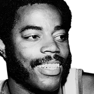

Jerry Lucas
1963-64 to 1973-74 · Career Map
Career summary
Career record in his games
451-378
.544
Games over .500
+73
829 games
Winning seasons
6
of 11 seasons
Playoff trips
8
of 11 seasons
Deepest playoff run
Won the title 1972-73, New York Knicks
Titles
1
1972-73
Average team rank
5.7
RNK, 1 = champion
With him vs without him
-.050
451-378 with, 41-28 without (team-season window). Between his first and last game for each team: 40-26 without, gap -.062
Career record in his games
450-375
.545
Games over .500
+75
825 games
Winning seasons
6
of 11 seasons
Playoff trips
8
of 11 seasons
Deepest playoff run
Won the title 1972-73, New York Knicks
Titles
1
1972-73
Average team rank
5.7
RNK, 1 = champion
With him vs without him
-.057
450-375 with, 41-27 without (team-season window). Between his first and last game for each team: 40-26 without, gap -.061
Career: regular seasons 1946-47 through 2025-26. 2026-27 (games through Nov. 16, 2026) is shown separately and is not in these totals. "With him" counts games he played; "without him" counts the team's games he missed inside his team-season window (see How we count).
Season by season
Newest first. On/off, starts and close games start in 1996-97 (n/a before). Rows with fewer than 20 games hide under "20+ games only".
| Season | Team and finish | Team W-L | Playoffs | His games | With him | Without him | Gap | On/off per 100 | Started / bench | Close games |
|---|---|---|---|---|---|---|---|---|---|---|
| 1973-74 | New York Knicks2nd in Atlantic, 2nd in East | 49-33 .598Rank 4 | Lost conference finals to Boston Celtics 1-4 | 73 of 82 | 45-28 .616 | 4-5 .444 | +.172 | n/a | n/a | n/a |
| 1972-73 | New York Knicks2nd in Atlantic, 2nd in East | 57-25 .695Rank 1 | Won the title, beat Los Angeles Lakers 4-1 in the Finals | 71 of 82 | 48-23 .676 | 9-2 .818 | -.142 | n/a | n/a | n/a |
| 1971-72 | New York Knicks2nd in Atlantic, 2nd in East | 48-34 .585Rank 2 | Lost NBA Finals to Los Angeles Lakers 1-4 | 77 of 82 | 45-32 .584 | 3-2 .600 | -.016 | n/a | n/a | n/a |
| 1970-71 | San Francisco Warriors2nd in Pacific, 6th in West | 41-41 .500Rank 7 | Lost conference semifinals to Milwaukee Bucks 1-4 | 80 of 82 | 40-40 .500 | 1-1 .500 | .000 | n/a | n/a | n/a |
| 1969-70 | Cincinnati Royals5th in Eastern | 36-46 .439Rank 9 | Missed the playoffs | 4 of 82 | 1-3 .250 | 0-1 .000 | +.250 | n/a | n/a | n/a |
| 1969-70 | San Francisco Warriors6th in Western | 30-52 .366Rank 13 | Missed the playoffs | 63 of 82 | 19-44 .302 | 10-7 .588 | -.287 | n/a | n/a | n/a |
| 1968-69 | Cincinnati Royals5th in Eastern | 41-41 .500Rank 9 | Missed the playoffs | 74 of 82 | 36-38 .486 | 5-3 .625 | -.139 | n/a | n/a | n/a |
| 1967-68 | Cincinnati Royals5th in Eastern | 39-43 .476Rank 9 | Missed the playoffs | 82 of 82 | 39-43 .476 | none | n/a | n/a | n/a | n/a |
| 1966-67 | Cincinnati Royals3rd in Eastern | 39-42 .481Rank 5 | Lost conference semifinals to Philadelphia 76ers 1-3 | 81 of 81 | 39-42 .481 | none | n/a | n/a | n/a | n/a |
| 1965-66 | Cincinnati Royals3rd in Eastern | 45-35 .562Rank 5 | Lost conference semifinals to Boston Celtics 2-3 | 79 of 80 | 44-35 .557 | 1-0 1.000 | -.443 | n/a | n/a | n/a |
| 1964-65 | Cincinnati Royals2nd in Eastern | 48-32 .600Rank 5 | Lost conference semifinals to Philadelphia 76ers 1-3 | 66 of 80 | 41-25 .621 | 7-7 .500 | +.121 | n/a | n/a | n/a |
| 1963-64 | Cincinnati Royals2nd in Eastern | 55-25 .688Rank 3 | Lost conference finals to Boston Celtics 1-4 | 79 of 80 | 54-25 .684 | 1-0 1.000 | -.316 | n/a | n/a | n/a |
Playoffs, with and without him
| Season | Team | Result | His games | With him | Without him | Gap |
|---|---|---|---|---|---|---|
| 1973-74 | New York Knicks | Lost conference finals to Boston Celtics 1-4 | 11 of 12 | 4-7 .364 | 1-0 1.000 | -.636 |
| 1972-73 | New York Knicks | Won the title, beat Los Angeles Lakers 4-1 in the Finals | 17 of 17 | 12-5 .706 | none | n/a |
| 1971-72 | New York Knicks | Lost NBA Finals to Los Angeles Lakers 1-4 | 16 of 16 | 9-7 .562 | none | n/a |
| 1970-71 | San Francisco Warriors | Lost conference semifinals to Milwaukee Bucks 1-4 | 5 of 5 | 1-4 .200 | none | n/a |
| 1966-67 | Cincinnati Royals | Lost conference semifinals to Philadelphia 76ers 1-3 | 4 of 4 | 1-3 .250 | none | n/a |
| 1965-66 | Cincinnati Royals | Lost conference semifinals to Boston Celtics 2-3 | 5 of 5 | 2-3 .400 | none | n/a |
| 1964-65 | Cincinnati Royals | Lost conference semifinals to Philadelphia 76ers 1-3 | 4 of 4 | 1-3 .250 | none | n/a |
| 1963-64 | Cincinnati Royals | Lost conference finals to Boston Celtics 1-4 | 10 of 10 | 4-6 .400 | none | n/a |
Arrival and departure effect
Team wins per 82 games the season before he arrived vs his first season there, and his last season vs the season after he left. Per 82 so short seasons compare fairly.
| Move | Team | Before | After | Change |
|---|---|---|---|---|
| Left | New York Knicks | 1973-74: 49-33 49.0 per 82 | 1974-75: 40-42 40.0 per 82 | -9.0 wins |
| Arrived | New York Knicks | 1970-71: 52-30 52.0 per 82 | 1971-72: 48-34 48.0 per 82 | -4.0 wins |
| Left | San Francisco Warriors | 1970-71: 41-41 41.0 per 82 | 1971-72: 51-31 51.0 per 82 | +10.0 wins |
| Left | Cincinnati Royals | 1969-70: 36-46 36.0 per 82 | 1970-71: 33-49 33.0 per 82 | -3.0 wins |
| Arrived | San Francisco Warriors | 1968-69: 41-41 41.0 per 82 | 1969-70: 30-52 30.0 per 82 | -11.0 wins |
| Arrived | Cincinnati Royals | 1962-63: 42-38 43.1 per 82 | 1963-64: 55-25 56.4 per 82 | +13.3 wins |
Mid-season trades
Each team's record before he arrived, while he was there (his window, games with and without him), and after he left, in the seasons he played for two or more teams.
| Season | Team | Before he arrived | While he was there | After he left | His games |
|---|---|---|---|---|---|
| 1969-70 | Cincinnati Royals | none | 1-4 .200 | 35-42 .455 | 4 |
| 1969-70 | San Francisco Warriors | 1-1 .500 | 29-51 .362 | none | 63 |
Best duos
Team record in regular-season games both played, top 10 by win %, at least 50 games together.
- Hawthorne Wingo 42-22 .656
- Jay Arnette 66-35 .653
- Bud Olsen 76-41 .650
 Earl Monroe
103-57 .644
Earl Monroe
103-57 .644 Willis Reed
53-30 .639
Willis Reed
53-30 .639
Walt Frazier 134-76 .638- Dick Barnett 80-46 .635
- Henry Bibby 68-40 .630
- Luther Rackley 39-23 .629
- Bill Bradley 136-81 .627